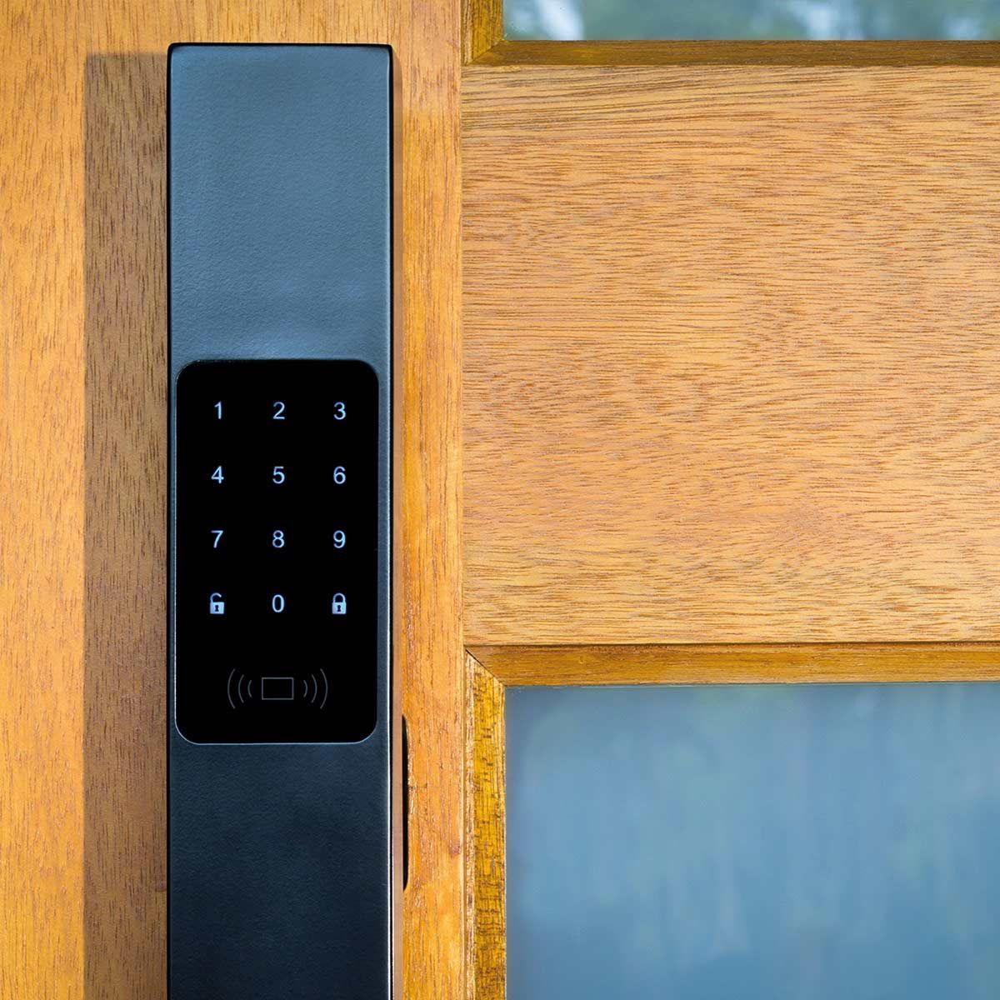
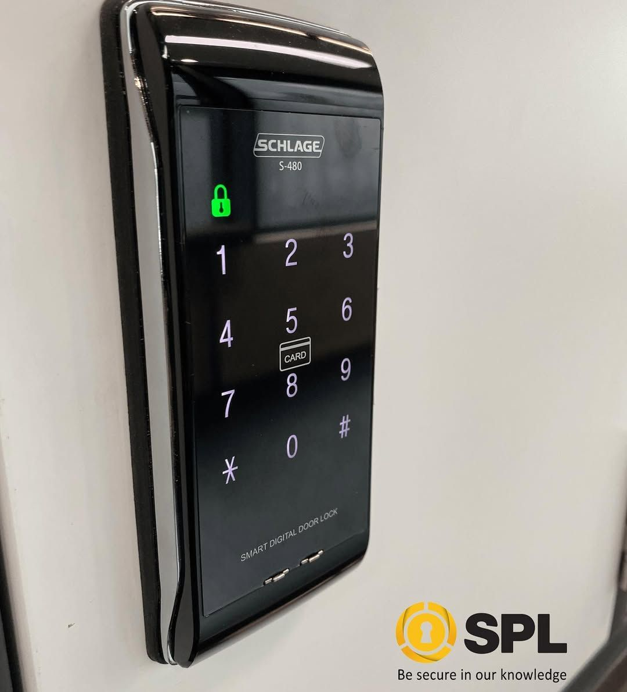

On this page
AT A GLANCE
At SPL Security Solutions, we provide 24/7 mobile locksmith services across Robina, delivering fast and professional solutions directly to your location.
Get A Free Quote Now!
Thank you for contacting SPL Security Solutions.
We will be in touch soon.

Mobile Locksmith Robina & Surrounds
At SPL Security Solutions, we provide 24/7 mobile locksmith services across Robina, delivering fast and professional solutions directly to your location. Whether it’s an emergency lockout, a damaged lock or a planned security upgrade, our skilled team is here to help.
Our mobile units are fully stocked with advanced tools and a wide selection of lock components, enabling us to address most issues on-site. From quick repairs to comprehensive security enhancements, we deliver effective services tailored to your needs. With years of experience, our team ensures reliable assistance to safeguard your home, business or vehicle.
Call us on (07) 5588 8111 for dependable locksmith services in Robina.
Our residential locksmith services in Robina provide reliable solutions to secure homes and families. From emergency lockouts to security upgrades, we deliver services tailored to your needs.
Our commercial locksmith services in Robina support businesses with advanced security solutions. Whether you need high-security locks, access control or emergency lock repairs, we help protect your assets and operations.
Our automotive locksmith services in Robina include on-site assistance for car lockouts, ignition issues and lost keys. We specialise in transponder key programming and quick replacements to get you back on the road.
Our restricted key systems in Robina provide enhanced security by preventing unauthorised duplication. These systems are ideal for both residential and commercial properties.
We offer comprehensive services for safes in Robina, including unlocking, combination updates and maintenance. Protect your valuables with safes designed to withstand theft, fire and water damage.
Our security systems in Robina integrate CCTV, alarms and access control for full property protection. We customise solutions to meet the unique requirements of homes and businesses.
Our lock hardware services in Robina offer durable and advanced solutions, such as high-security deadbolts, childproof locks and modern smart locks. We ensure your locks are reliable and meet modern safety standards.
Upgrade your doors in Robina with high-quality hardware designed for security and usability. Our range includes sturdy hinges, sleek handles and sliding door systems tailored to your property.
We source stylish and functional architectural door hardware, including fire-rated fittings, smooth door closers, and decorative handles for modern and traditional spaces in Robina.
Emergency Locksmith Services Robina
Lock-related emergencies can happen at any time, and we’re here to provide prompt, reliable assistance when they do!
- Accidental lockouts
Locked out of your home, car, or workplace? We offer efficient solutions to regain access safely. - Lost or stolen keys
Misplaced or stolen keys can compromise security. We provide rekeying or lock replacement to protect your property. - Damaged locks
Faulty or broken locks can leave your property vulnerable. Our team offers repairs or replacements to restore security. - Malfunctioning digital locks
Issues with electronic or smart locks can arise unexpectedly. We diagnose and fix these problems to keep your systems operational. - Safe access issues
Struggling to open a safe or update its combination? We offer secure, damage-free solutions to resolve access problems.

Contact Details
24/7 Emergency Locksmiths or Security Tech


Trading Hours
Retail Shop
Frequently Asked Questions
-
What should I do if my lock is damaged after an attempted break-in?
If your lock has been compromised, avoid using it and contact a professional for immediate repair or replacement. Securing your property quickly is essential to prevent further risks.
-
Can I have multiple locks rekeyed to work with the same key?
Yes, rekeying allows multiple locks to operate with a single key, providing convenience for managing access. This is a cost-effective solution for improving security without replacing all your locks.
Locksmith & Security Solutions Gold Coast, Brisbane & Northern NSW